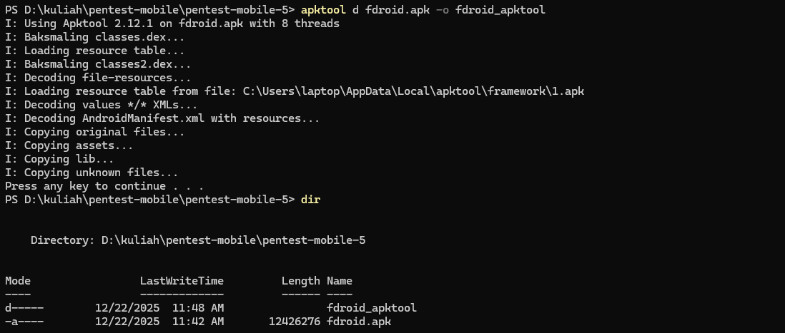

1. Pendahuluan
Artikel ini membahas praktik analisis statis aplikasi Android dengan metode decompile APK untuk mengidentifikasi potensi kelemahan keamanan tanpa menjalankan aplikasi.
Artikel ini membahas praktik analisis statis aplikasi Android dengan metode decompile APK untuk mengidentifikasi potensi kelemahan keamanan tanpa menjalankan aplikasi.
Menentukan lokasi file APK F-Droid pada emulator:
Mengambil file APK F-Droid dari emulator ke sistem host Windows:
APK diekstrak langsung dari emulator untuk dilakukan analisis statis di sisi host Windows.
Pastikan file tersedia

Pastikan file tersedia
Risiko
Jika perangkat berada dalam kondisi ADB aktif atau perangkat terkompromi, attacker dapat:
- Melakukan backup data aplikasi
- Mengakses SharedPreferences, database lokal, dan file internal
Berpotensi menyebabkan kebocoran data pengguna, konfigurasi aplikasi, atau metadata sensitif.
Mitigasi
Set nilai berikut pada build production:
Jika backup memang dibutuhkan:
- Batasi data menggunakan backup_rules.xml
- Pastikan tidak ada data sensitif (token, credential) yang ikut ter-backup
Risiko
Activity yang diekspos (exported="true") dapat:
- Dipanggil oleh aplikasi lain
- Menjadi target Intent Injection
Jika tidak divalidasi dengan baik, attacker dapat:
- Mengakses fitur internal
- Memicu alur logika aplikasi tanpa otorisasi
Mitigasi
Set android:exported="false" untuk activity yang tidak perlu diakses eksternal
Jika harus true: Gunakan permission khusus
Risiko
MANAGE_EXTERNAL_STORAGE
- Memberikan akses luas ke seluruh storage pengguna
- Risiko kebocoran atau manipulasi file
QUERY_ALL_PACKAGES
- Memungkinkan enumerasi semua aplikasi terpasang
- Berpotensi melanggar privasi pengguna
WRITE_SETTINGS
- Dapat mengubah pengaturan sistem perangkat
Mitigasi
Terapkan principle of least privilege
- Hapus permission yang tidak benar-benar dibutuhkan
- Gunakan alternatif modern: Scoped Storage dan Storage Access Framework (SAF)
- Sertakan justifikasi jelas jika permission sensitif wajib digunakan
Risiko
- Menggunakan model storage lama (pre-Android 10)
- Memperluas akses file yang seharusnya dibatasi oleh Scoped Storage
- Berpotensi meningkatkan risiko kebocoran data
Mitigasi
- Migrasi penuh ke Scoped Storage
- Hapus flag ini pada target SDK modern
- Gunakan API penyimpanan resmi Android terbaru
Risiko
- Intent dapat dipalsukan oleh aplikasi lain
- Risiko Intent Spoofing
- Pengguna bisa diarahkan ke alur aplikasi melalui URL tidak valid
Mitigasi
- Aktifkan android:autoVerify="true" untuk domain resmi
- Validasi domain dan path di sisi aplikasi
- Gunakan HTTPS saja jika memungkinkan
Berdasarkan hasil analisis statis dengan metode decompile APK menggunakan APKTool dan JADX pada aplikasi Android yang diuji, dapat disimpulkan bahwa aplikasi tidak menjalankan mode debug karena atribut android:debuggable tidak ditemukan pada AndroidManifest.xml, sehingga secara default berada pada kondisi produksi. Namun demikian, masih ditemukan beberapa potensi risiko keamanan, seperti allowBackup yang aktif, sejumlah activity dengan status exported="true", penggunaan permission sensitif yang cukup luas, serta penerapan legacy external storage. Konfigurasi tersebut berpotensi dimanfaatkan untuk akses tidak sah, penyalahgunaan intent, dan kebocoran data apabila aplikasi dijalankan pada perangkat yang terkompromi. Oleh karena itu, diperlukan penerapan prinsip least privilege, pembatasan komponen yang diekspos, penonaktifan backup untuk data sensitif, serta penyesuaian konfigurasi keamanan agar aplikasi lebih aman sebelum digunakan oleh pengguna umum.